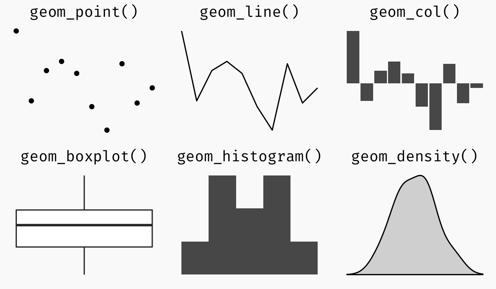
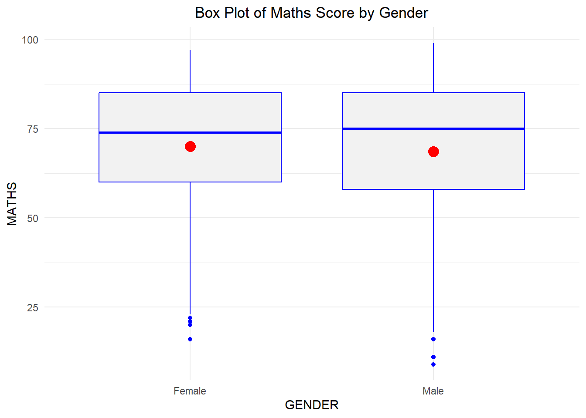
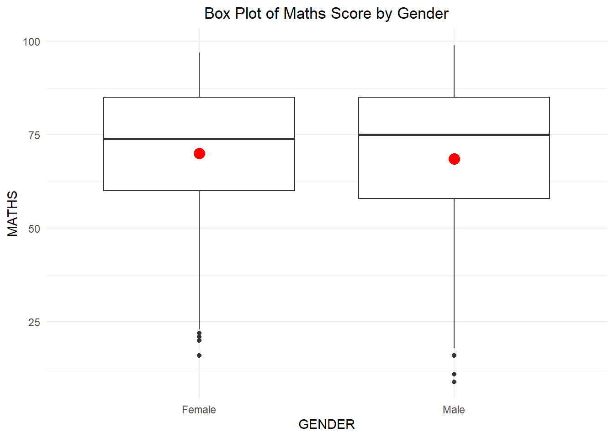
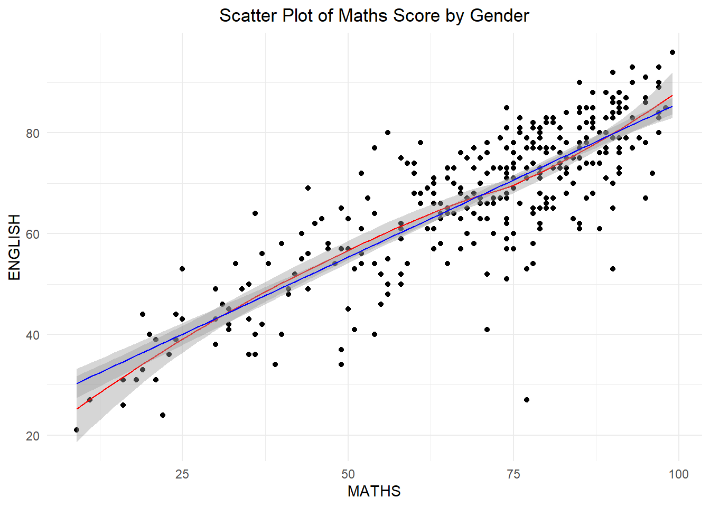

pacman::p_load(tidyverse)Hands-on Exercise 1
1. Getting Started
1.1 Install and launching R packages
The code chunk below uses p_load() of pacman package to check if tidyverse packages are installed in the computer. If they are, then they will be launched into R.
1.2 Importing the data
exam_data <- read_csv("data/Exam_data.csv")Rows: 322 Columns: 7
── Column specification ────────────────────────────────────────────────────────
Delimiter: ","
chr (4): ID, CLASS, GENDER, RACE
dbl (3): ENGLISH, MATHS, SCIENCE
ℹ Use `spec()` to retrieve the full column specification for this data.
ℹ Specify the column types or set `show_col_types = FALSE` to quiet this message.Summary of data imported
summary(exam_data) ID CLASS GENDER RACE
Length:322 Length:322 Length:322 Length:322
Class :character Class :character Class :character Class :character
Mode :character Mode :character Mode :character Mode :character
ENGLISH MATHS SCIENCE
Min. :21.00 Min. : 9.00 Min. :15.00
1st Qu.:59.00 1st Qu.:58.00 1st Qu.:49.25
Median :70.00 Median :74.00 Median :65.00
Mean :67.18 Mean :69.33 Mean :61.16
3rd Qu.:78.00 3rd Qu.:85.00 3rd Qu.:74.75
Max. :96.00 Max. :99.00 Max. :96.00 2. Plotting a simple bar chart
ggplot(data = exam_data,
aes(x = RACE)) +
geom_bar()+
labs(x = "RACE", y = "Number of students", title = "Distribution of students by RACE") +
theme_minimal() +
theme(plot.title = element_text(hjust = 0.5))3. Initial Exploration of ggplot2
3.1 Exploring Base R vs ggplot2
hist(exam_data$MATHS)
ggplot(data=exam_data, aes(x = MATHS)) +
geom_histogram(bins=10,
boundary = 100,
color="black",
fill="grey") +
ggtitle("Distribution of Maths scores")
4. Exploring ggplot2 Geometric objects
The geom layer combines data, aesthetic mapping, a geom (geometric object), a stat (statistical transformation), and a position adjustment. Some examples of geom objects are shown below.

4.1 Bar Chart
ggplot(data=exam_data,
aes(x=RACE)) +
geom_bar(fill = "lightblue", width = 0.6, color = "darkblue") +
labs(x = "RACE", y = "Number of students", title = "Distribution of students by RACE") +
theme_minimal() +
theme(plot.title = element_text(hjust = 0.5))
4.2 Dot Plot
ggplot(data=exam_data,
aes(x = MATHS)) +
geom_dotplot(binwidth = 2.5,
dotsize = 0.5, fill = "lightblue") +
scale_y_continuous(NULL, breaks = NULL)+
labs(x = "MATHS score", title = "Distribution of MATHS score") +
theme_minimal() +
theme(plot.title = element_text(hjust = 0.5))
4.3 Histogram Plot
ggplot(data=exam_data, aes(x = MATHS)) +
geom_histogram(bins=20,
boundary = 100,
color="darkblue",
fill="lightblue") +
ggtitle("Distribution of Maths scores") +
theme_minimal() +
theme(plot.title = element_text(hjust = 0.5))
4.4 Modifying a geometric object by changing aes() - Stacked Histogram
ggplot(data=exam_data,
aes(x= MATHS,
fill = GENDER)) +
geom_histogram(bins=20,
color="grey30") +
ggtitle("Distribution of Maths scores") +
theme_minimal() +
theme(plot.title = element_text(hjust = 0.5))
4.5 Density Plot
ggplot(data=exam_data,
aes(x = MATHS, color = GENDER)) +
geom_density() +
ggtitle("Density Distribution of Maths scores by Gender") +
theme_minimal() +
theme(plot.title = element_text(hjust = 0.5))
4.6 Box Plot
ggplot(data=exam_data,
aes(y = MATHS,
x= GENDER)) +
geom_boxplot(notch=TRUE, color = "blue", fill = "grey95") +
stat_summary(geom = "point",
fun="mean",
colour ="red",
size=4) +
ggtitle("Box Plot of Maths Score by Gender") +
theme_minimal() +
theme(plot.title = element_text(hjust = 0.5))4.7 Violin Plot
ggplot(data=exam_data,
aes(y = MATHS,
x = GENDER)) +
geom_violin(color = "blue") +
ggtitle("Violin Plot of Maths Score by Gender") +
theme_minimal() +
theme(plot.title = element_text(hjust = 0.5))
4.8 Scatter Plot
ggplot(data=exam_data,
aes(x= MATHS,
y = ENGLISH, shape = GENDER, color = GENDER)) +
geom_point() +
geom_smooth(linewidth = 0.5) +
ggtitle("Scatter Plot of Maths Score by Gender") +
theme_minimal() +
theme(plot.title = element_text(hjust = 0.5))`geom_smooth()` using method = 'loess' and formula = 'y ~ x'
4.9 Combining Box Plot and Scatter Plot
ggplot(data=exam_data,
aes(y = MATHS,
x= GENDER)) +
geom_boxplot(color = "blue") +
geom_point(position="jitter",
size = 0.5) +
ggtitle("Combination Plot of Maths Score by Gender") +
theme_minimal() +
theme(plot.title = element_text(hjust = 0.5))
4.10 Exploring Statistics functions
Using stat_summary()
ggplot(data=exam_data,
aes(y = MATHS, x= GENDER)) +
geom_boxplot() +
stat_summary(geom = "point",
fun.y="mean",
colour ="red",
size=4) +
ggtitle("Box Plot of Maths Score by Gender") +
theme_minimal() +
theme(plot.title = element_text(hjust = 0.5))Warning: The `fun.y` argument of `stat_summary()` is deprecated as of ggplot2 3.3.0.
ℹ Please use the `fun` argument instead.
Using geom_() function to override default stat.
ggplot(data=exam_data,
aes(y = MATHS, x= GENDER)) +
geom_boxplot() +
geom_point(stat = "summary",
fun="mean",
colour ="red",
size=4) +
ggtitle("Box Plot of Maths Score by Gender") +
theme_minimal() +
theme(plot.title = element_text(hjust = 0.5))
4.11 Adding best fit curve on Scatter Plot
ggplot(data=exam_data,
aes(x= MATHS,
y = ENGLISH)) +
geom_point() +
geom_smooth(linewidth=0.5,
color = "red") +
geom_smooth(method = lm,
linewidth=0.5,
color = "blue") +
ggtitle("Scatter Plot of Maths Score by Gender") +
theme_minimal() +
theme(plot.title = element_text(hjust = 0.5))`geom_smooth()` using method = 'loess' and formula = 'y ~ x'
`geom_smooth()` using formula = 'y ~ x'5. Exploring ggplot2 Facet objects
5.1 Using facet_wrap()
ggplot(data=exam_data,
aes(x= MATHS)) +
geom_histogram(bins=20) +
facet_wrap(~ CLASS) +
ggtitle("Distribution of Maths Score by Class") +
theme_minimal() +
theme(plot.title = element_text(hjust = 0.5))
5.2 Using facet_grid()
ggplot(data=exam_data,
aes(x= MATHS)) +
geom_histogram(bins=20) +
facet_grid(~ CLASS) +
ggtitle("Distribution of Maths Score by Class") +
theme_minimal() +
theme(plot.title = element_text(hjust = 0.5))
5.3 Creating Trellis Box Plot
ggplot(data = exam_data,
aes(x=CLASS,
y=MATHS)) +
geom_boxplot() +
facet_wrap(~ GENDER) +
ggtitle("Trellis Box Plot of Maths scores") +
theme_minimal() +
theme(plot.title = element_text(hjust=0.5))
ggplot(data = exam_data,
aes(x=CLASS,
y=MATHS)) +
geom_boxplot() +
facet_wrap(~ GENDER, nrow = 2, strip.position = "left") +
ggtitle("Trellis Box Plot of Maths scores") +
theme_minimal() +
theme(plot.title = element_text(hjust=0.5))6. Exploring ggplot2 Coordinates
6.1 Horizontal Bar Chart using coord_flip()
ggplot(data=exam_data,
aes(x=RACE)) +
geom_bar(fill = "lightblue") +
coord_flip() +
ggtitle("Distribution of students by Race") +
theme_minimal() +
theme(plot.title = element_text(hjust = 0.5))
6.2 Changing y- and x- axes range
ggplot(data=exam_data,
aes(x= MATHS,
y = ENGLISH)) +
geom_point() +
geom_smooth(method = lm,
linewidth=0.5,
color = "blue") +
coord_cartesian(xlim = c(0,100),
ylim = c(0,100)) +
ggtitle("Scatter Plot of Maths Score by Gender") +
theme_minimal() +
theme(plot.title = element_text(hjust = 0.5))`geom_smooth()` using formula = 'y ~ x'
7. Exploring ggplot2 Themes
7.1 Working with themes
ggplot(data = exam_data,
aes(x = RACE)) +
geom_bar(fill = "yellow") +
coord_flip() +
theme_classic() +
theme(panel.background = element_rect(fill = "grey70",
color = "white")) +
ggtitle("Distribution of students by Race") +
theme(plot.title = element_text(hjust = 0.5, color = "blue"))